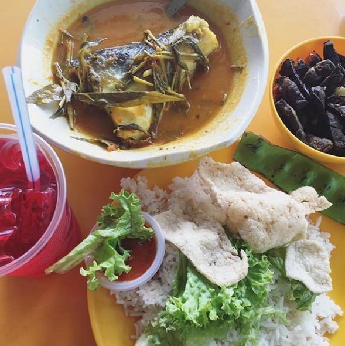
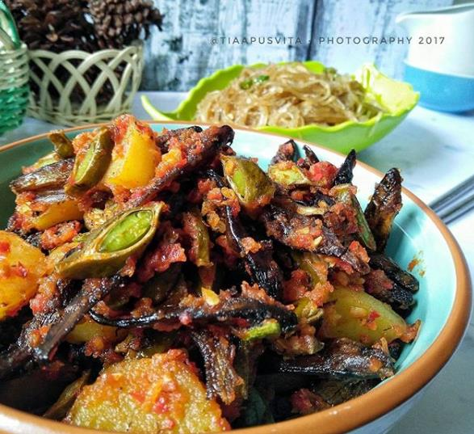
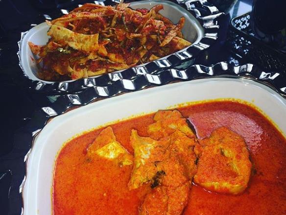
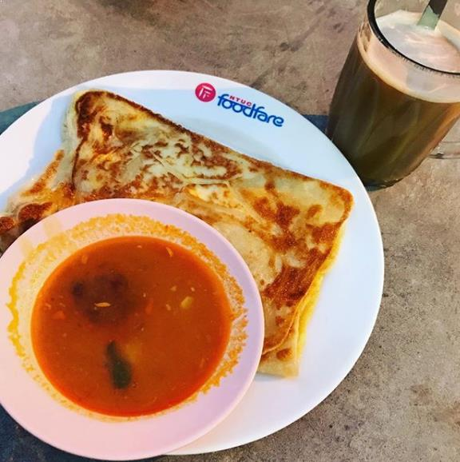
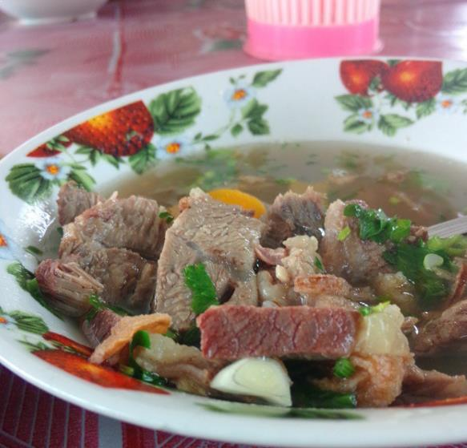

Riau merupakan salah satu wilayah yang kaya akan potensi daerah. Ada banyak hal yang dapat kamu lakukan ketika berkunjung ke kota Pekanbaru, Riau. Misalnya mengunjung tempat wisata Kepulauan Riau, berbelanja batik Riau, dan juga berburu makanan khas Riau. Satu lagi yang tidak boleh terlewat oleh kalian pecinta buah kuning berduri, yaitu berburu durian Pekanbaru atau durian Riau yang terkenal kelezatannya. Bagi kamu yang sedang mencari info mengenai makanan khas Riau, ulasan di bawah ini merupakan hal yang wajib kamu baca.

Makanan khas dari Riau yang menjadi ikon pariwisata Riau ini mempunyai ciri khas kuahnya yang berwarna kuning dan menyiram potongan ikan patin besar. Daging ikan patin ini rendah kolesterol dan bertekstur lembut dengan rasanya yang gurih. Aroma masakan gulai ikan patin pun sangat menggugah selera.

Makanan khas Pekanbaru Riau yang satu ini mempunyai penikmat yang cukup banyak. Letak geografis Riau yang diapit beberapa sungai membuat suplai ikan selais ini tidak pernah kurang. Ikan selais banyak diolah dengan cara asapan dan disajikan dengan sambal merah yang pedas. Daging ikan selais rasanya renyah dan khas aroma masakan Riau.

Makanan khas provinsi Riau berikutnya adalah asam pedas baung. Baung merupakan ikan air tawar yang mempunyai protein tinggi dan rendah lemak. Ikan baung biasanya hidup di sungai besar ataupun muara sungai yang berada di sekitar wilayah Riau. Kuahnya berwarna kemerahan dan terdiri dari bumbu khusus membuat siapapun ingin mencicipinya. Dagingnya lembut dan kenyal namun tidak lembek sehingga nikamt untuk disantap. Salah satu rumah makan yang menyediakan menu andalan asam pedas baung adalah Pondok Asam Pedas Baung yang terletak di seberang Rumah Sakit Awal Bross deket dengan bandara Riau.

Roti canai berbentuk pipih dan sebenarnya berasal dari budaya India. Roti ini memang banyak dijual di Negara Melayu, seperti Singapura, Malaysia, dan juga Indonesia, khususnya di daerah Riau. Cara memasaknya dengan diberi sedikit minyak. Rasanya empuk dan gurih. Roti canai biasa disajikan dengan kari daging kambing dengan cara disobek rotinya untuk diccol ke kuah kari daging kambing atau domba. Gurihnya sangat menggoda.

Sup tunjang merupakan sup tulang sapi yang masih dikelilingi dengan daging sapi tebal. Baunya begitu harum dan rasanya lezat. Bumbu dan rempah-rempahnya sangat terasa ketika kamu makan satu porsi sup tunjang. Sensasi melepaskan daging dari tulangnya cukup membuat anda sedikit kewalahan dalam memakannya. Itulah yang menjadi keunikan dari sup tunjang ini. Sup tunjang yang recommended salah satunya ada di Jalan Pinang, Pekanbaru seberang Hotel Pangeran tepatnya di warung makan Sup Tunjang Pertama.
Yang Mau Tau Makanan Paling Diminati Orang Riau , Yuk cek disini